Today’s box tractor next to three directions with a hint of realism. Every drawing is an orthographic, flat-shaded projection of the same low-poly part list the three.js scene would build, so proportions, light from the top left and triangle counts carry straight over.
Decisions
Four side-by-side comparisons, each with a one-line recommendation. Same renderer, light and scale as everything below.
1 · Trees & plots A + B’s touches
Left: plain A (refined citrus, realistic ground). Right: A with B’s bare twin tram lines in every drive lane (replacing A’s grass tyre tracks) and white-tagged row-end posts (row ends pulled in 0.05 so the posts stand clear).
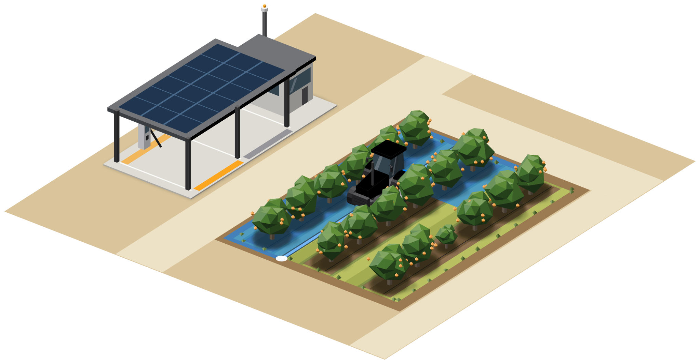
Plain A · Map view
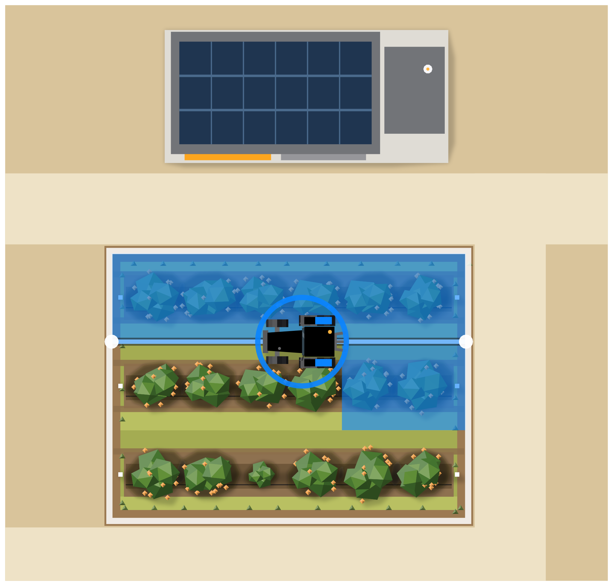
A + B touches · Map view
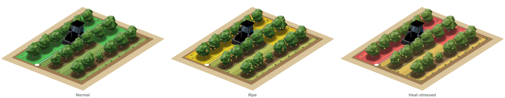
Plain A · normal, ripe, heat
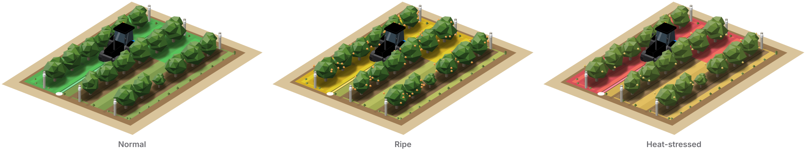
A + B touches · normal, ripe, heat
Readability: the tram lines turn every sweep lane into two dark parallel stripes running the full block length, so the lanes, and therefore where coverage will paint next, read from both the tilted camera and the Map. Plain A’s tracks fade into the grass at scene size. The posts mark the row ends and help count rows, but they are dots on the Map. Coverage and AB stay on top and are unaffected. Cost: 17,856 vs 16,704 triangles for 8 blocks; the posts merge into the same static mesh as the tufts, so no extra draw.
Recommendation: take A + B’s touches; the tram lines are the biggest readability gain for zero draws.
2 · AB line: today vs dark edge
The A + B block with tractor A on lane 2 and coverage painted behind it. Top row: the worst case (ripe grass, yellow coverage). Bottom row: a normal block with blue coverage. In each sheet, left is today’s line (0.05 wide, fleet colour mixed 45% with white) and right adds a 0.09-wide #1C1C1E underlay at 0.55.
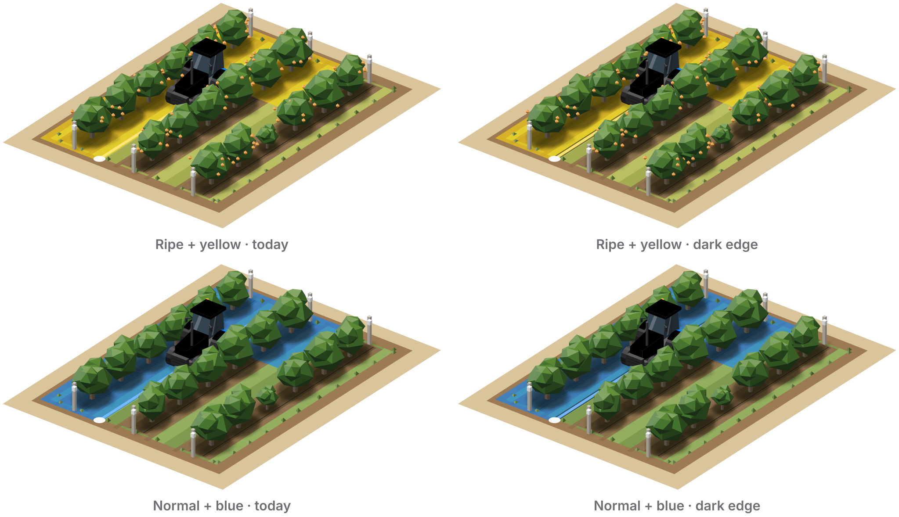
3/4 view
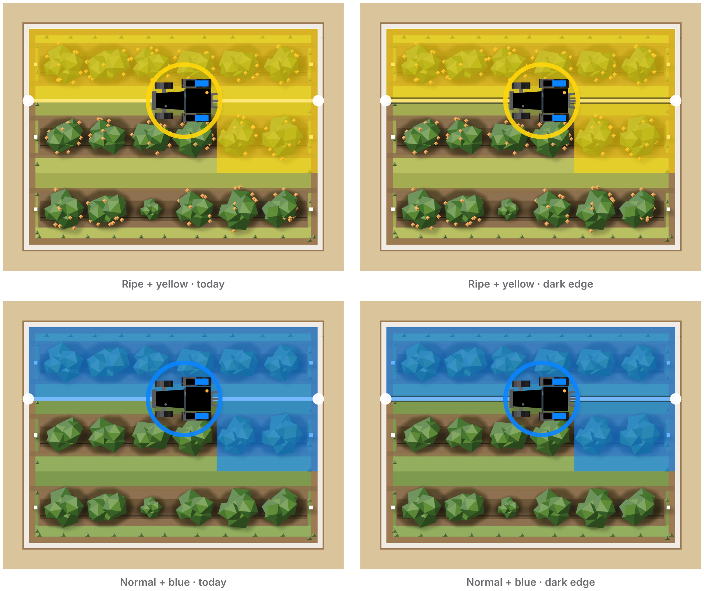
Map view (top-down)
What changes: on yellow over ripe grass, today’s line nearly disappears in both views (only the white end dots show). On blue it reads, but weakly over the painted band. With the edge it reads in all four cases, Map included. In 3D the front tree row hides most of the line either way, so the visible stretch and the end dots carry it.
Recommendation: add the dark edge. It is one extra quad per tractor (same as the Map’s implement-bar edge), drawn just under the line.
3 · Fleet hub depth
The real depot strip from the mock scenario, as built: hubPlacement() puts the hub north of road 6, above block A, in a strip only 1.02 deep for a 1.5-deep pad. The hub (refuel and service bays, as in depotHub.js) is shown with tractor A (0.85) nosed into the refuel bay, 0.05 short of the pump. Shown at about two-thirds of scene size; the top-down row is north up.
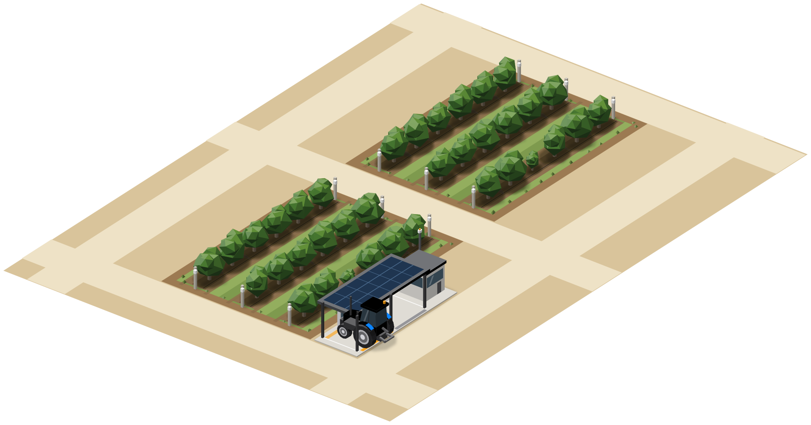
a · Depth squashed
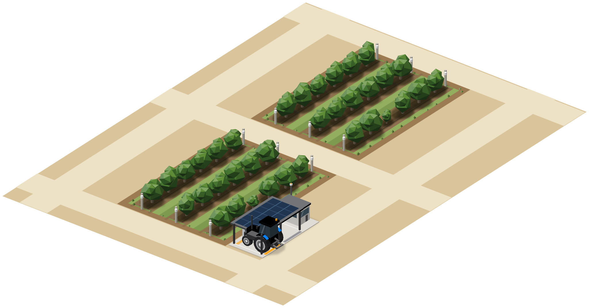
b · Uniform 0.66
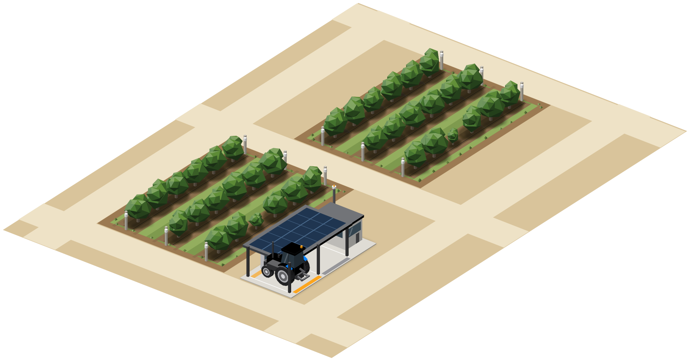
c · Full 0.85, block A one row north
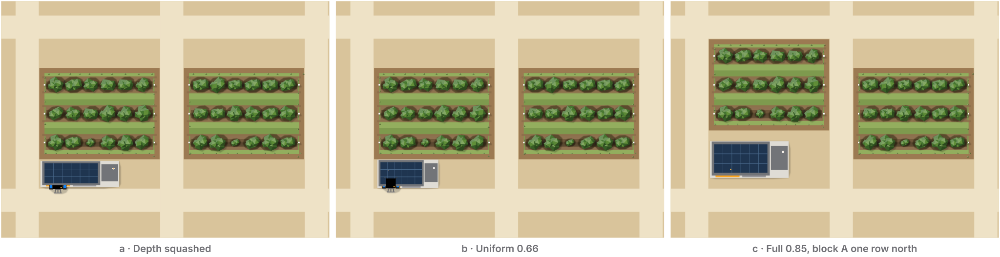
Option
Scale w × h × d
Strip depth
Canopy height
Parked tractor overhang
Layout cost
a · Depth squashed
0.85 × 0.85 × 0.6
1.02
0.75
0.16 into road 6
none
b · Uniform 0.66
0.66 × 0.66 × 0.66
1.02
0.58
0.13 into road 6
none
c · Full 0.85, block A one row north
0.85 × 0.85 × 0.85
2.02
0.75
none
Block A moves one row north
Tractor A’s roof is at 0.72. a keeps the canopy (0.75) above it, but the squashed depth leaves the parked tractor’s hitch 0.16 over the road edge. b fits the pad more evenly but drops the canopy to 0.58, below the tractor roof, so the hub looks like a toy next to its own tractor, and the overhang barely changes (0.13): the tractor, not the pad, sets the overhang. c is the only one where the tractor fits under the canopy, but block A must move to rows 1–3. Its bed then sits 0.02 from road 0, its north headland lane runs 0.1 from the road edge, and A no longer lines up with B–D.
Recommendation: keep a (the current build). To lose the overhang, move the pump and tool chest about 0.16 further north inside the pad instead of changing the layout.
4 · Blocks E–H layout
The whole 20 × 14 farm grid, top-down, with row and column numbers. Roads are the pale bands (rows 0, 6, 13; columns 0, 5, 10, 15). Hatched bands are empty rows between a road and a block tier, the arrows on the right measure them, and orange marks the problem in each option. The blue band is the strip hubPlacement() fits the Fleet hub into. Next to each plan: the same farm from the default 3D camera.
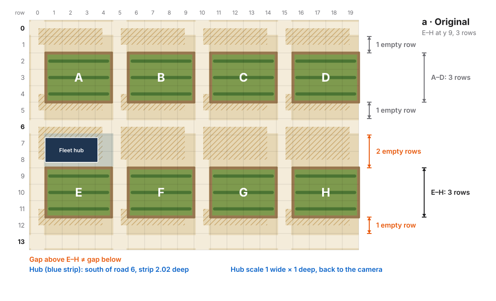
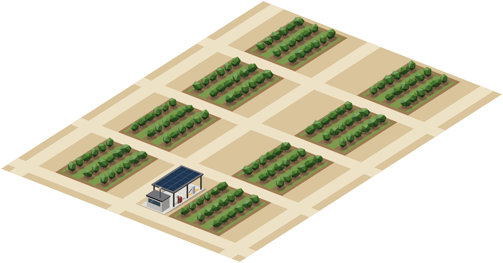
a · Original (E–H at y 9, 3 rows). E–H sat one row lower than the middle: two empty rows above them and one below, so the bottom tier looks pushed down. Same 3-row size as A–D. The deeper strip south of road 6 (2.02) gives the Fleet hub full size, but on the south side it turns its back to the camera.
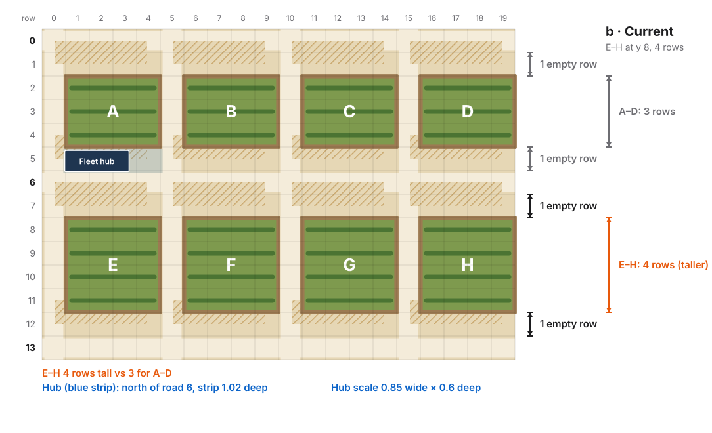
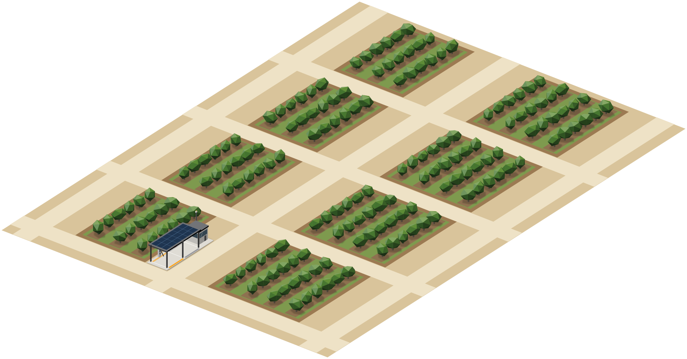
b · Current (E–H at y 8, 4 rows). E–H start one row higher and grow to 4 rows, so there is exactly one empty row above and below, like A–D, and everything stays on whole cells. Cost: E–H are a third bigger than A–D (4 tree rows instead of 3), and the hub has to squeeze into the 1.02-deep strip north of road 6 (depth squashed to 0.6).
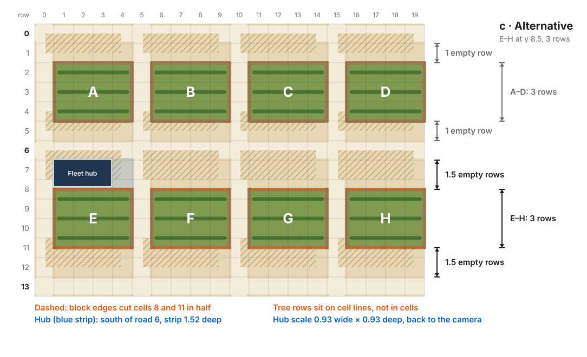
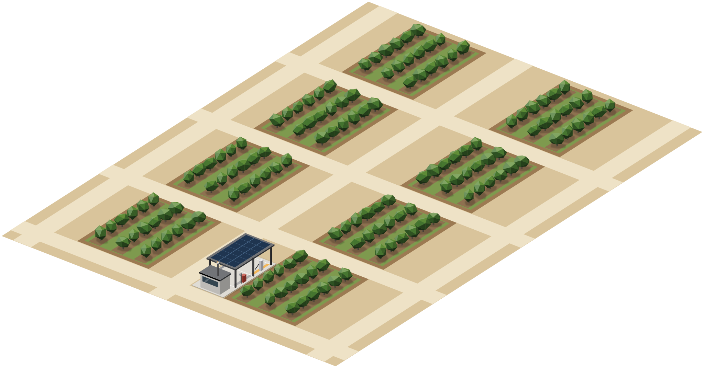
c · Alternative (E–H at y 8.5, 3 rows). E–H stay 3 rows like A–D and move half a row up, so they are centred with 1.5 empty rows on each side. But their edges land in the middle of cells 8 and 11, and the tree rows land on cell lines, so anything that works in whole cells (blocked cells, block-by-cell lookups, labels, A* paths) no longer lines up with the trees. Hub: 1.52-deep strip south of road 6, scale 0.93, back to the camera.
Recommendation: keep b (current). It is the only option with even gaps and whole cells; the 4-row E–H blocks read as “bigger blocks”, not as an error.
Side by side
Same scale in every column. The top view points the nose up and marks the hitch point for the Live feed implement bar.
Current
A · Modern cab
B · Autonomous orchard
C · Compact utility
3/4 view
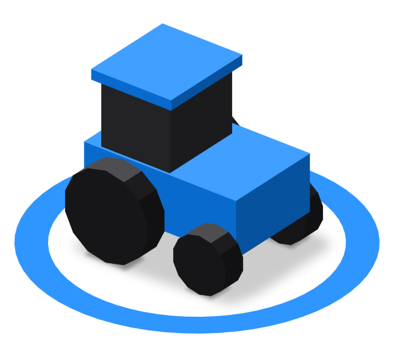
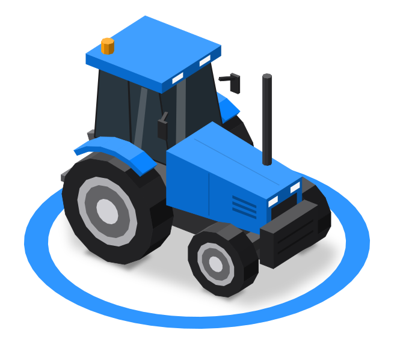
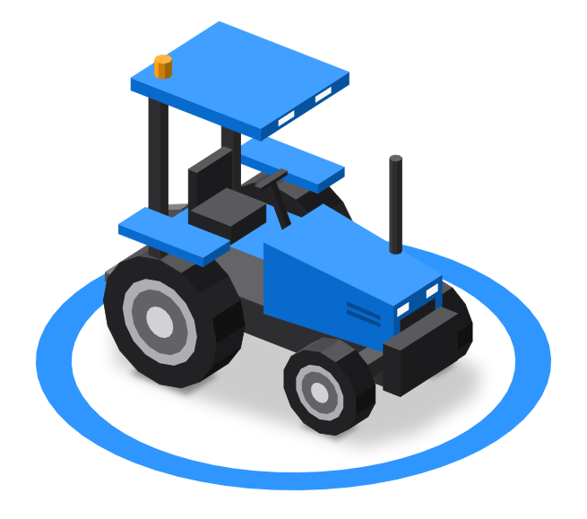
Side
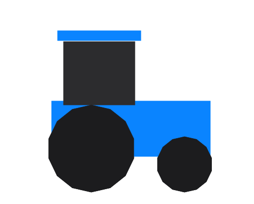
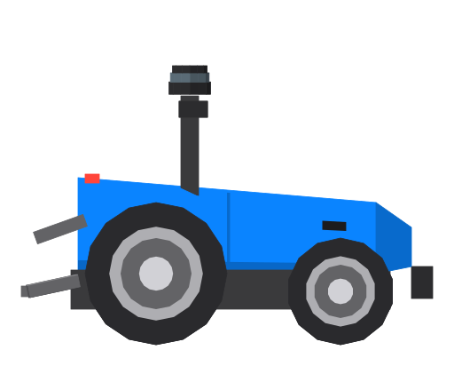
Top · Live feed
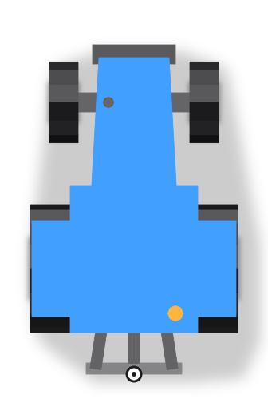
At scene size
Tractor about 48 px tall, the size the orbit camera shows it. Current, A, B and C, then each direction’s fleet sheet at the same scale.
CurrentABC
CurrentABC
Fleet colours and states
T1 to T8, then T1 broken (pulsing red ring, smoke) and T3 working with a sprayer on the hitch. Colour sits only on body panels; tyres, glass and chassis stay neutral.
A · Modern cab tractor
B · Autonomous orchard tractorC · Compact utility
Directions
What changes, why, and how each one maps to three.js r128 geometry.
A · Modern cab tractor
What changes
Tapered hood with grille, headlights and side vents. Raked glass cab with dark pillars and one highlight. Fleet-coloured roof, hood and fenders over 16-sided treaded rear tyres with grey rims. Exhaust stack, amber beacon, front ballast, three-point hitch.
Why
Keeps today’s silhouette, with the cab at the back and the roof in fleet colour, so the scene reads the same and only gets more believable. The roof and hood stay the largest colour areas from the tilted camera, so all eight colours hold at 48 px.
Three.js parts
Chassis, axle, ballast: Box. Hood: Box with the four front vertices moved in and down (taper). Cab base, roof: Box. Cab: Box with the top-front edge pulled back (raked glass), dark Phong with low shininess. Fenders: 5 thin lofted boxes per side, or one ExtrudeGeometry arc. Wheels: Cylinder 16 / 14 with every other side face darker for tread, plus a 3-ring CircleGeometry rim. Exhaust, beacon: Cylinder 8. Mirrors, hitch links: thin Box.
Budget
31 meshes and 580 triangles of solid geometry. Add 23 panel decals (grille, lights, vents, glass highlights; 46 triangles as vertex-coloured quads) and the grey rim and hub discs (180 triangles, three CircleGeometry rings per outer wheel face) for 806 triangles as drawn. Estimated LOD for 50+: 508 (not rendered here).
B · Autonomous orchard tractor
What changes
Low, cab-less, electric. One long body that rises toward the back, with a chamfered nose and full-width LED bar, a glass sensor deck, and a mast carrying a camera bar and a LiDAR puck. Low fenders, red e-stop, tail lights, hitch.
Why
Tells the autonomy story at a glance, and the mast gives a distinct silhouette even top-down. Trade-offs: there is no exhaust, so the breakdown smoke rises from the deck, “fuel %” would read better as “energy %”, and less fleet colour shows from above because of the glass deck.
Three.js parts
Body and nose: two lofted Boxes. Deck glass, LED bar, e-stop: vertex-coloured quads. Mast, camera bar, camera pods: Box. LiDAR: three stacked Cylinder 14 (base, lit window, cap). Fenders: 4 lofted boxes per side. Wheels as in A.
Budget
29 meshes and 644 triangles of solid geometry. Add 15 panel decals (grille, lights, vents, glass highlights; 30 triangles as vertex-coloured quads) and the grey rim and hub discs (180 triangles, three CircleGeometry rings per outer wheel face) for 854 triangles as drawn. Estimated LOD for 50+: 596 (not rendered here).
C · Compact utility
What changes
Short hood, open operator station with seat and steering wheel, a two-post roll frame under a fleet-coloured canopy, flat fenders.
Why
Sits between A and B: lighter and more “farm utility”. The open frame looks busy below about 60 px, and the canopy floating on thin posts reads less solidly than A’s cab.
24 meshes and 496 triangles of solid geometry. Add 9 panel decals (grille, lights, vents, glass highlights; 18 triangles as vertex-coloured quads) and the grey rim and hub discs (180 triangles, three CircleGeometry rings per outer wheel face) for 694 triangles as drawn. Estimated LOD for 50+: 472 (not rendered here).
Triangle budget
Tractor
Meshes
Solid
Panel decals
Rim discs
As drawn
LOD est.
Fleet of 5
Current
7
244
+0
+0
244
148
1220
A · Modern cab
31
580
+46
+180
806
508
4030
B · Autonomous
29
644
+30
+180
854
596
4270
C · Compact
24
496
+18
+180
694
472
3470
The status ring is not counted (RingGeometry, 80 triangles). As drawn, all three directions exceed 600 triangles per tractor; only C comes close. Read literally, “under 600 for five tractors” means about 120 per tractor, which even today’s 244-triangle tractor misses. The table therefore reports per-tractor counts, and the target needs a decision. The LOD estimate uses 10 / 8-sided wheels, one rim disc plus a hub disc, 3 fender segments and no panel decals; it lands near 500 to 600. A trims further with 12 / 10-sided wheels and an 8-sided beacon. For 50+ tractors, merge each design into two geometries: fleet-coloured panels (an InstancedMesh with instanceColor) and neutral parts with vertex colours (a second InstancedMesh). Add a third only if the wheels need to spin. That is two or three draw calls for the whole fleet. Footprint: A is about 1.1 long including the hitch (0.98 without), against today’s 0.8, so the ballast and hitch reach the ring’s inner edge; check lane spacing. New designs use a thinner ring (0.62 to 0.72) than today’s (0.62 to 0.76), which flatters them slightly at 48 px.
Recommendation
Go with A, the modern cab tractor. It keeps the silhouette people already know from the scene, puts the most fleet colour where the tilted camera looks (roof, hood, fenders), and stays readable in all eight colours at 48 px. Its exhaust stack gives the breakdown smoke a natural source, and it fits the fuel and mechanic story.
If the pitch leans into autonomy, B’s mast and LiDAR puck can bolt onto A’s roof as an optional “autonomy kit” (about 200 extra triangles) without changing the base model.
House: the depot
Step 1, concepts only (not built in 3D yet). Same method as the tractors: each direction is a low-poly part list in scene units, projected with the same light and tones, so sizes and triangle counts carry straight over. The depot sits in the free strip between the depot road and block E (about 4.2 × 2.0 cells); every direction fits inside 3.4 × 1.6.
Side by side
Same scale in every column; the front (door side) faces the default camera.
Current shed
A · Machine shed
B · Fleet hub (built)
C · Container yard
3/4 view
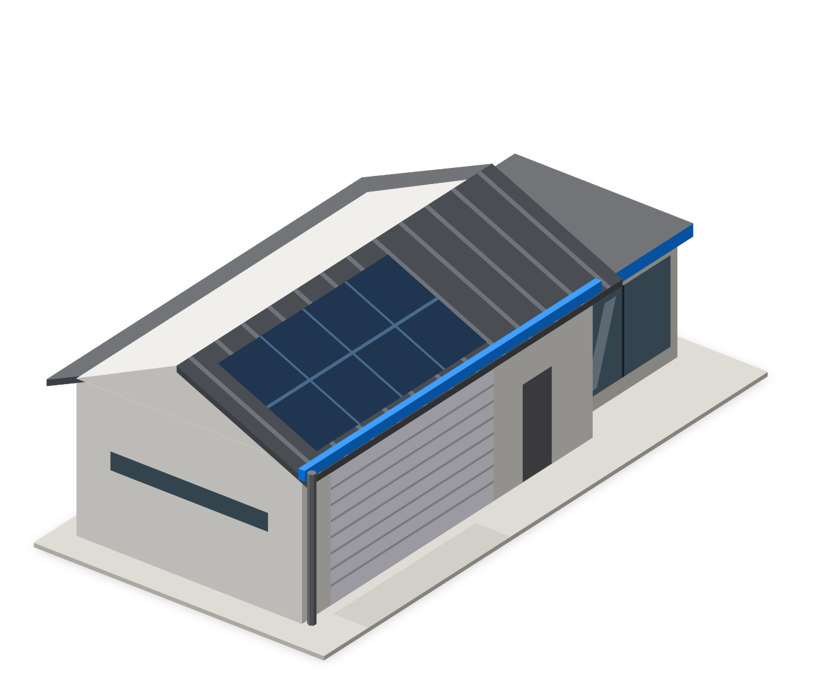
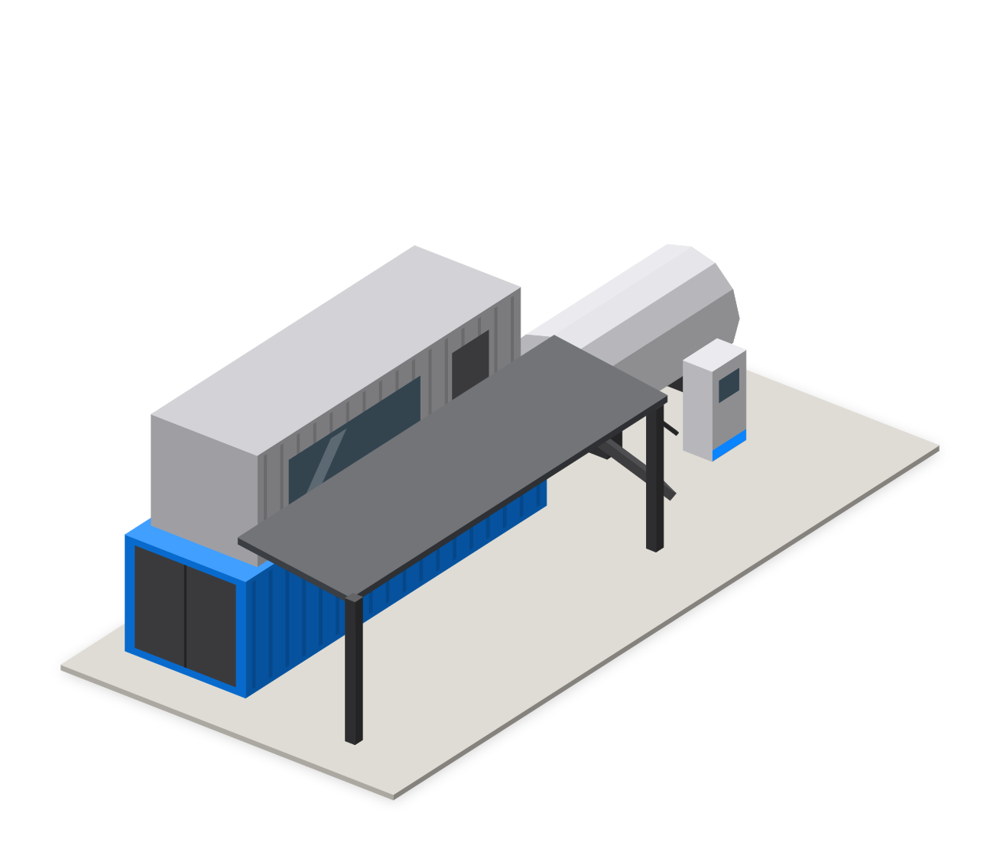
Side
Top
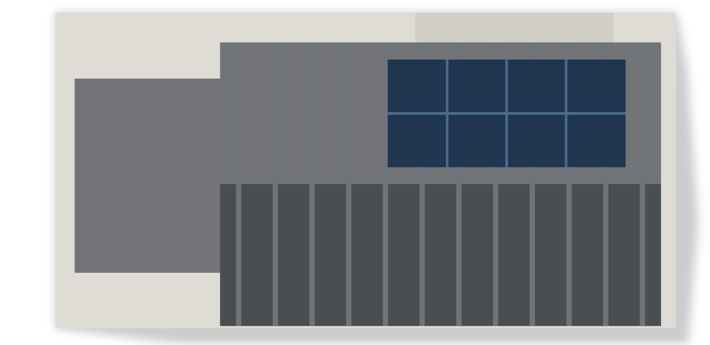
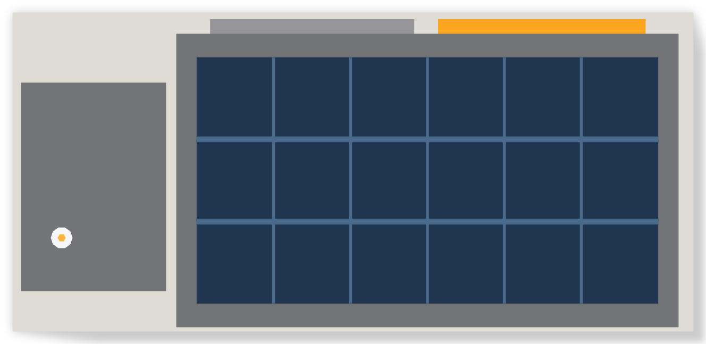
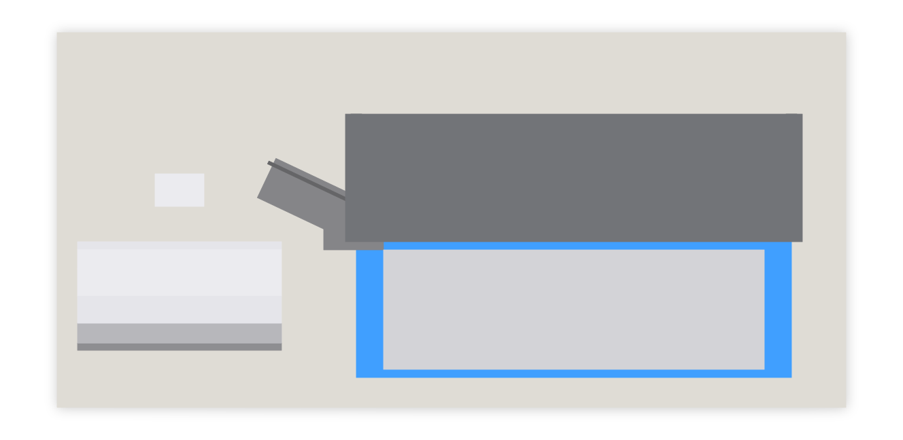
At scene size, next to tractor A
Same pixels per unit as the tractor sheets above, tractor A at its scene scale (0.85) parked by the door.
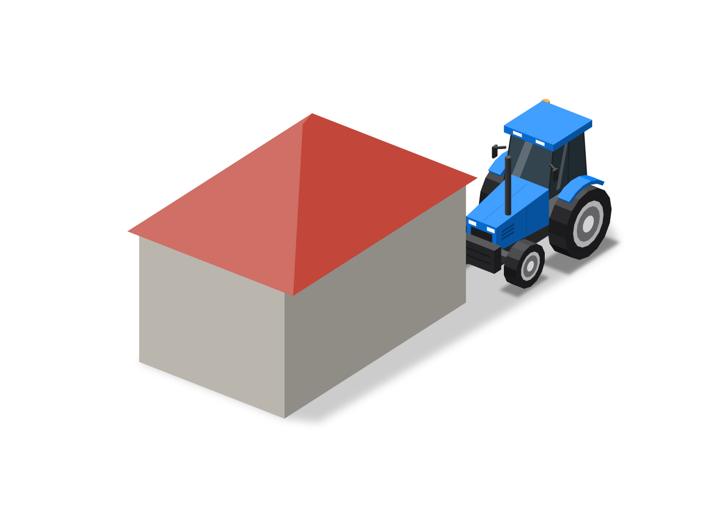
Current · 24 tris
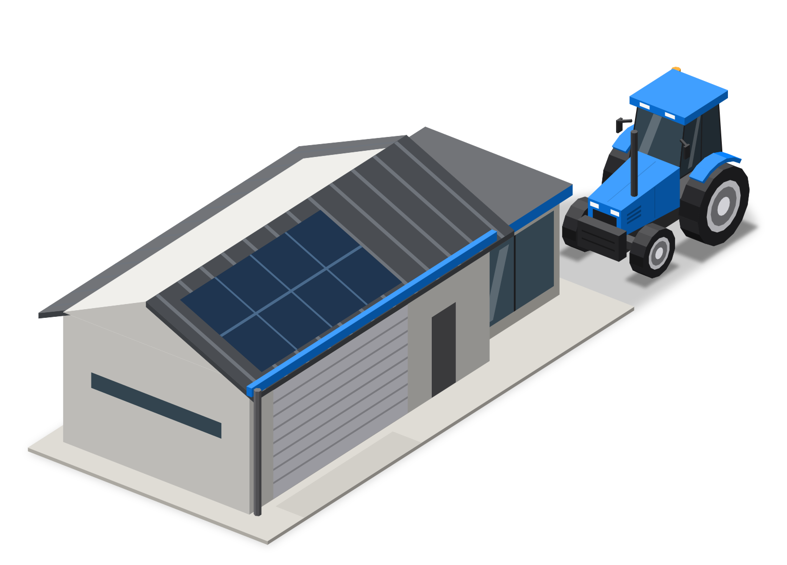
A · 210 trisB · 322 tris
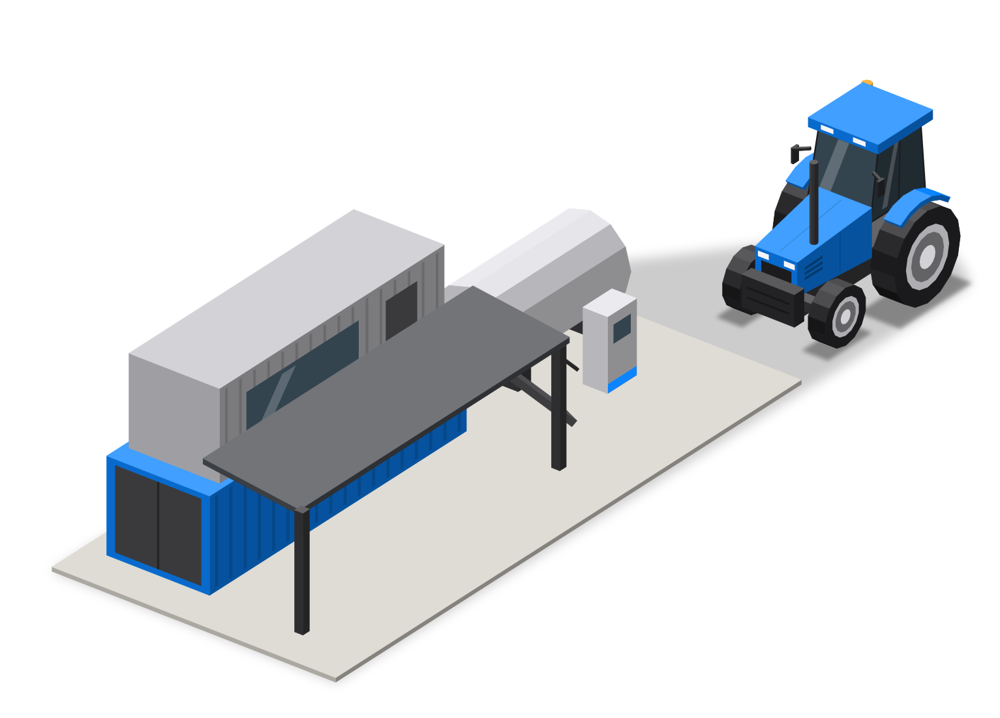
C · 294 tris
Current · 24 trisA · 210 trisB · 322 trisC · 294 tris
Directions
A · Modern machine shed
What changes
Low gable shed with a standing-seam charcoal roof, a solar array on the south slope, a wide roll-up door and a man door, a clerestory strip on the side, and a small glass-fronted office with a flat roof. A thin fleet-blue fascia runs under the eave and around the office roof. Concrete apron in front.
Why
Reads instantly as “where the tractors live”: the roll-up door is the depot. The dark roof is the biggest shape from the tilted camera, so it anchors the corner without fighting the orchard greens or the fleet colours; solar adds the modern note. Matches tractor A’s diesel and mechanic story.
Three.js parts
Walls, office, apron, fascia: Box. Gable ends: one Box with the top edge collapsed to the ridge. Roof: two thin sloped Boxes. Seams, solar, door slats, glass: vertex-coloured quads. Downpipe: Cylinder 6.
Budget
9 parts and 116 triangles of solid geometry, plus 47 panel decals (94 triangles) for 210 triangles as drawn. Footprint 2.9 × 1.5, 1.1 tall.
B · Fleet hub (built)
What changes
A solar canopy on six posts over two marked bays: a REFUEL bay (fuel pump with price display, amber band and hose, amber bay stripes and fascia sign) and a SERVICE bay (red tool chest, air/oil hose reel, grey stripes and sign). A small glass-banded control building with a comms mast and amber lamp; fleet-blue fascia. Updated to match the 3D build in dashboard/src/scene/depotHub.js; the first concept had EV chargers.
Why
The boldest top-down silhouette (one big solar rectangle) and, with refuel and service bays, it fits tractor A’s diesel, fuel percentage and mechanic story. The open canopy hides the bays from the default camera, so the bay-entry stripes on the front apron carry them.
Three.js parts
Pad, posts, canopy, pump, tool chest, building: Box. Hose: thin Box beam. Reel: Cylinder 8. Mast top: Cylinder 10, lamp: Cylinder 6. Solar grid, bay lines, signs, display: vertex-coloured quads. Built as one merged vertex-coloured geometry (1 draw).
Budget
18 parts and 264 triangles of solid geometry, plus 29 panel decals (58 triangles) for 322 triangles as drawn. Footprint 3.2 × 1.5, 1.3 tall.
C · Container yard
What changes
A fleet-colour shipping container as the workshop, an office container stacked on top with stairs and a landing, a lean-to shade roof on posts, and a fuel tank on saddles with a pump.
Why
Utilitarian and characterful, and the one where the fleet colour is largest. It is the busiest at scene size: the lean-to hides the stairs and the tank reads as a white blob below about 60 px.
Three.js parts
Containers, posts, saddles, pump, landing: Box. Stairs, rail: Box beams. Lean-to: sloped Box. Tank: Cylinder 12 with one end disc. Corrugation, doors, glass: vertex-coloured quads.
Budget
13 parts and 188 triangles of solid geometry, plus 41 panel decals (106 triangles) for 294 triangles as drawn. Footprint 2.9 × 1.4, 0.9 tall.
House
Parts
Solid
Panel decals
As drawn
W × D × H
Current shed
2
24
+0
24
1.6 × 1.1 × 1.3
A · Machine shed
9
116
+94
210
2.9 × 1.5 × 1.1
B · Fleet hub
18
264
+58
322
3.2 × 1.5 × 1.3
C · Container yard
13
188
+106
294
2.9 × 1.4 × 0.9
The house is static, so in three.js it bakes into one vertex-coloured geometry (one draw call, one shadow caster), with the fleet-blue fascia as a fixed vertex colour. All three directions stay around 300 triangles or less (B, as built, is 322), well under half a tractor.
Go with A, the modern machine shed. The roll-up door says “depot” at a glance, the dark solar roof anchors the corner from the tilted camera without competing with the fleet colours, and it fits tractor A’s diesel, fuel and mechanic story.
If the pitch leans into autonomy, borrow two details from B for A’s apron: the comms mast with its amber lamp and the painted bay lines. Both are cheap (about 40 triangles) and keep A’s silhouette.
Trees & plots
Concepts only, not built in 3D. Realism is the main axis, as with tractor A: stylised low-poly, but clearly a step toward a real Arizona citrus grove. Scale: one row pitch (1 cell) reads as a real 6.5 m row spacing, so 4 m in-row spacing is 0.62, a 4 m canopy is 0.6 tall and the 40 cm skirt is 0.06. Same renderer, light and tones as the tractors and houses; part lists map 1:1 to three.js r128 geometry.
Single tree
Same scale in every column. B shows one cell of hedgerow (its instancing unit) with a row-end post.
Current
A · Refined citrus
B · Orchard rows
C · Soft minimal
3/4 view
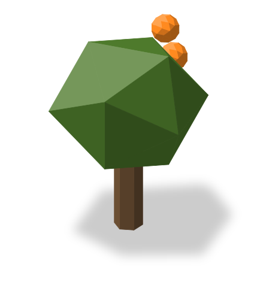
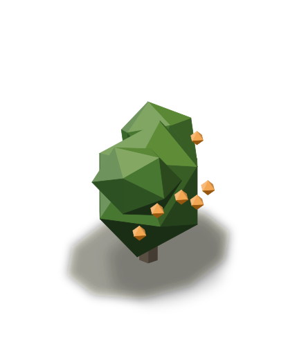
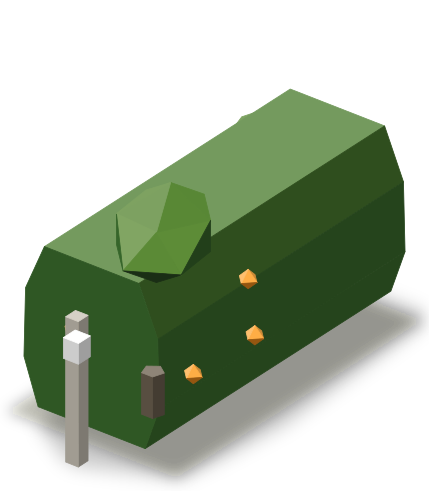
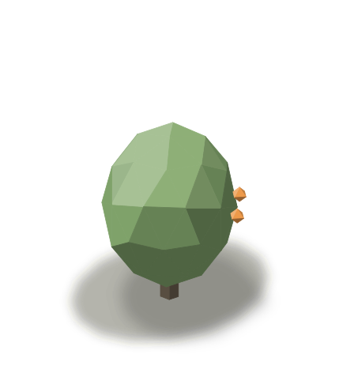
Side
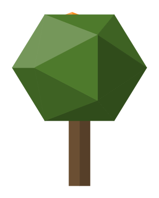
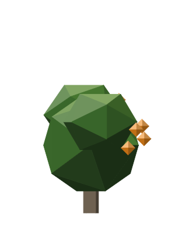
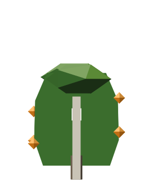
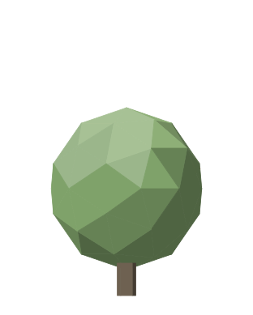
Top
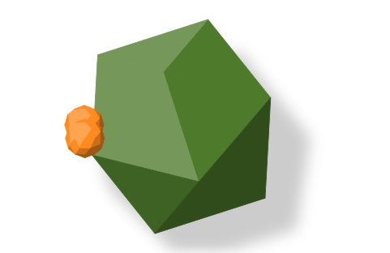
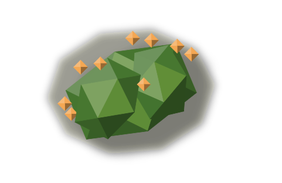
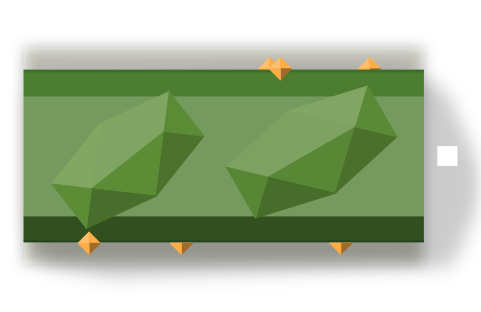
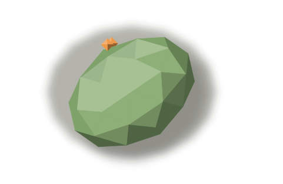
One block, tractor A at work
A ripe 4 × 3 block at scene scale: soil frame, grass treatment and trees. Tractor A (0.85) works lane 2 heading west, 45% of the way along, like mockSource’s serpentine sweep. Behind it is the coverage painted so far (row 1 done, row 2 behind the hitch, 0.6 opacity at y 0.032) and its AB line (0.05 wide, fleet colour mixed 45% with white, white end dots). The Fleet hub sits across the north road.
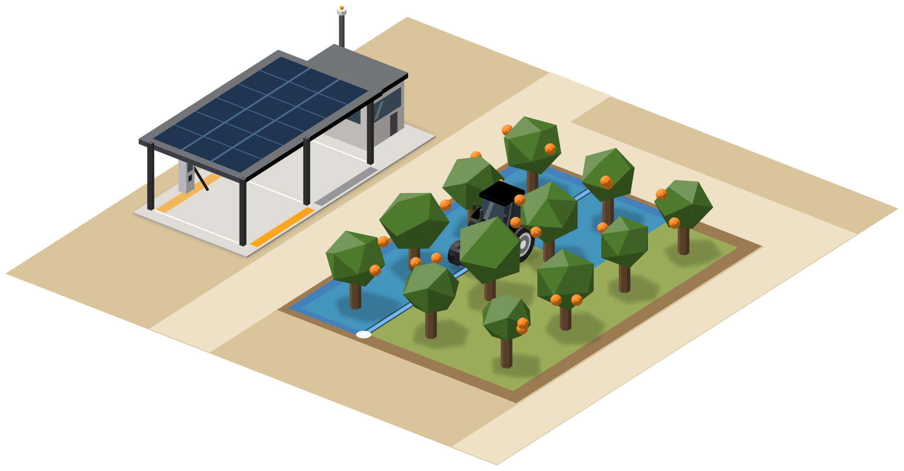
CurrentA · Refined citrus
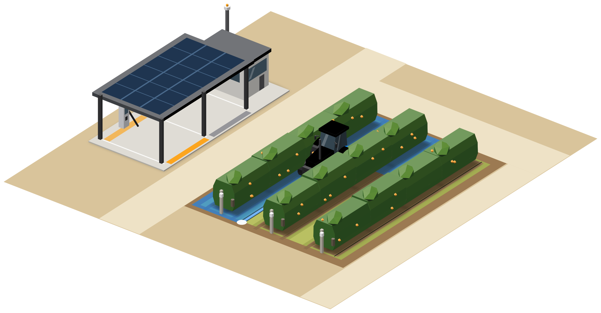
B · Orchard rows
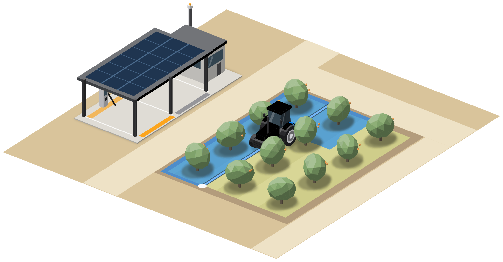
C · Soft minimal
At scene size
Same pixels per unit as the tractor sheets (tractor about 48 px tall), on both backgrounds.
Current · 7,104 trisA · 16,704 trisB · 12,864 trisC · 11,328 tris
Current · 7,104 trisA · 16,704 trisB · 12,864 trisC · 11,328 tris
Map view (top-down)
North up. The same block in the Map’s vocabulary: coverage (0.62) and the AB line drawn above the canopy, a white block outline, and the tractor icon with its status ring on top. The Map’s procedural aerial (liveBasemap.js) paints about 5.5 canopy rows per cell (real density for 40 m cells), while the diorama has 3 rows per block. These samples use the diorama density; for the aerial, copy each direction’s colours and marks (flush highlight, NW-lit canopy with SE shadow, berm, wet strip, tram lines) at its own density.
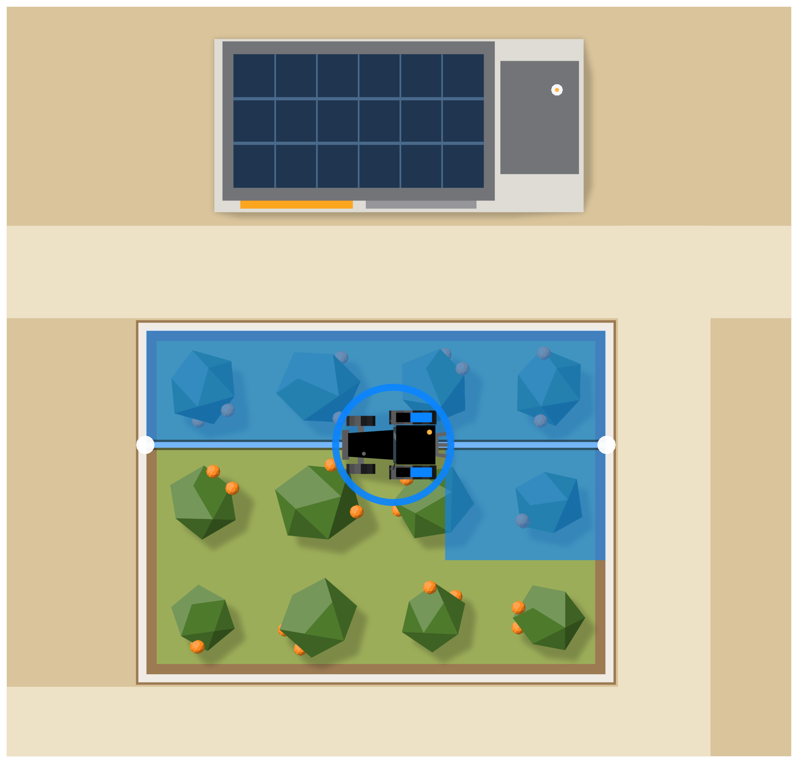
CurrentA · Refined citrus
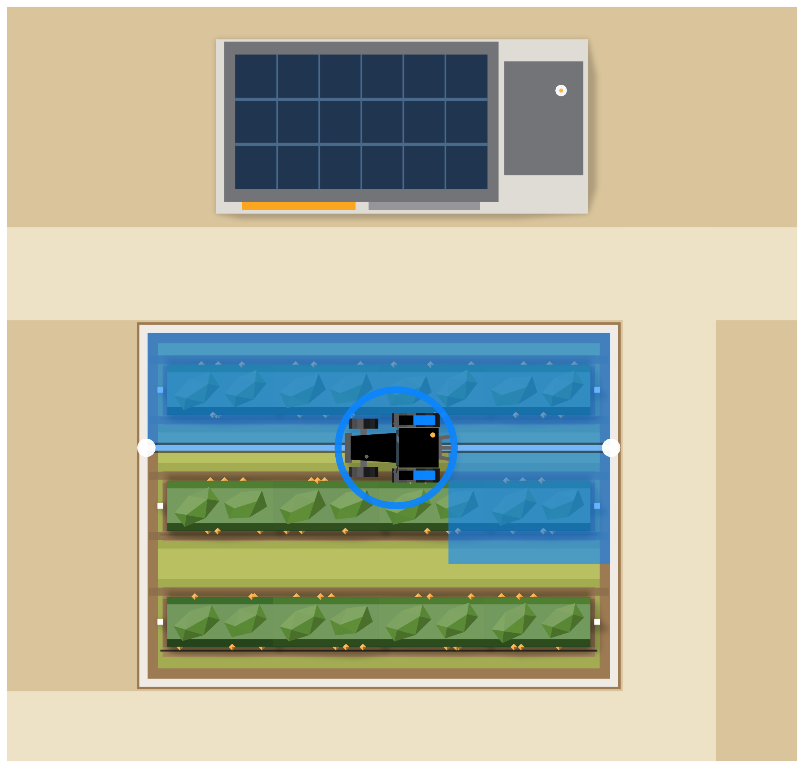
B · Orchard rows
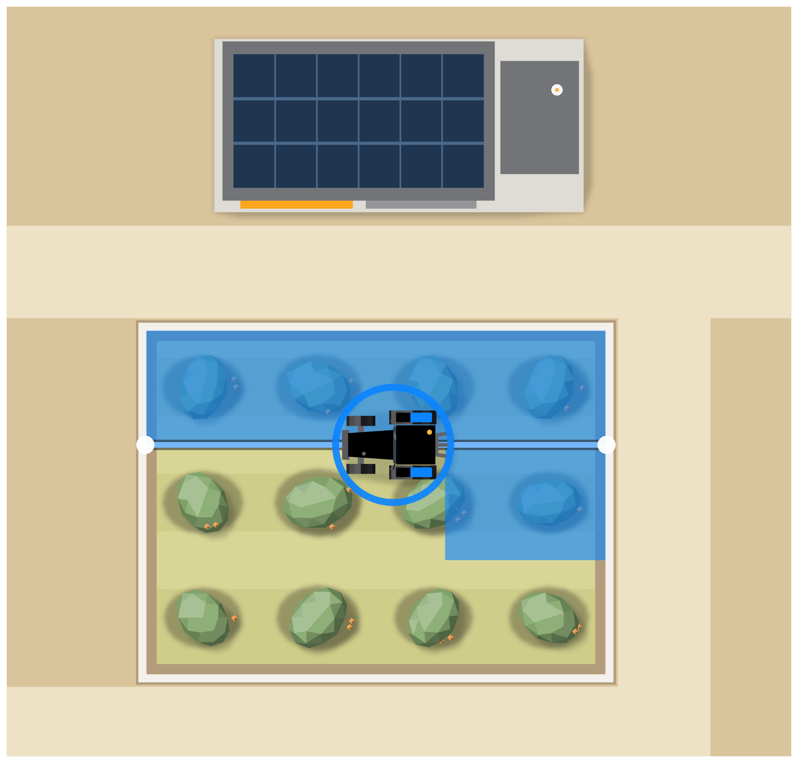
C · Soft minimal
Block states: normal, ripe, heat-stressed
The tints are what farm.js can actually produce: the Lambert grass colour plus the emissive set in tick(). The Current row shows exactly today’s values. For the directions, ripe uses emissive #FF7A1A at 0.15 (today’s formula gives 0.087 at ripeness 0.72, which barely shows), and fruit carries most of the signal. Heat uses #FF4A10 at 0.27 (the middle of today’s 0.18–0.36 pulse) plus drier grass and a yellowed canopy. Each tile uses the hardest fleet colour for its tint: green on normal, yellow on ripe, pink on heat.
Real citrus proportions at one row pitch = 6.5 m: short bark-grey trunk, skirt pruned to 0.06 (about 40 cm), a dense dome 0.6 tall and 0.44 across the row with two offset shoulder lobes. Leaves are deep glossy green with lighter new-growth flush on the upward faces and a darker interior underneath. Fruit hangs in the outer, lower-middle band: none below ripeness 0.5, a few (3) at colour-break yellow-orange up to 0.7, heavy (9) full orange above (lemon blocks would use #EDD23A). Fruit is drawn at radius 0.03, about 5× real size, because real 8 cm fruit would be under a pixel at scene size. 6 trees per row at 4 m spacing (18 per block), with slight seeded scale, rotation and tint variation and one young replant. The ground is an Arizona grove: bare tilled berms under the rows, a darker wet strip and the drip line along each row, mowed grass middles striped along the work direction, tyre tracks in every lane, soft contact AO and edge tufts.
Why
The most believable of the set and the closest match to tractor A’s level of detail. The canopy is kept narrow (0.44 across the row) because tractor A is oversized (0.6 wide; a real one would be 0.34): it still brushes the canopies on both sides of its 0.56 alley, which reads as real orchard work. Trade-off: the busiest silhouette. From the tilted camera the row in front hides part of the tractor and the coverage under it; the Map view and the alleys carry that.
Realism · readability · cost
Realism ●●●●● · Readability ●●●●● · 16,704 triangles for 8 blocks as mocked (24,480 with every block heavy).
Three.js parts
Canopy: IcosahedronGeometry(1, 0) non-indexed with per-face vertex colours (flush, mid, interior), drawn as ONE InstancedMesh with 3 instances per tree (dome and two shoulders) and instanceColor for the per-tree tint. Trunk: Cylinder 5 InstancedMesh. Fruit: OctahedronGeometry InstancedMesh. AO: Circle 10 with a radial alpha texture, InstancedMesh, or baked into the ground texture. Ground: one shared CanvasTexture on the existing grass planes (stripes, berms, wet strip, drip line, tracks). Tufts: one merged static mesh. Note: the SVGs mottle every lobe differently; one shared instanced geometry repeats the same face pattern, with only instanceColor and rotation varying. 18 trees per block also means farm.js stops placing one tree per cell; the layout loop has to use the row/in-row spacing instead.
Budget
18 trees per block, 90 triangles each (Canopy lobes 20 × 3, Trunk 20, Contact AO 10). Fruit: Octahedron, 8 triangles each. Ground: one shared CanvasTexture (stripes, berms, wet strip, drip line, tracks) + emissive.
B · Orchard rows
What changes
Modern high-density hedgerow: each row is one continuous machine-hedged canopy (an 8-sided prism per cell, with two low top humps), skirted, with trunks just peeking out underneath. Drive alleys sit exactly on the tractor’s E–W sweep lanes, with bare twin tram lines, tilled berms, a drip line just outside the skirt, and white-tagged row-end posts. Fruit sits on the hedge faces.
Why
The most readable. The lanes are the plot, so coverage bands and AB lines line up with what you see, and the rows read even top-down. Mechanically hedged rows are common in commercial citrus, so it is real, but it is less iconic as “citrus tree”, and the long flat faces look more architectural than A’s domes.
Realism · readability · cost
Realism ●●●●● · Readability ●●●●● · 12,864 triangles for 8 blocks as mocked (16,320 with every block heavy).
Three.js parts
Hedge: one 8-sided prism (ExtrudeGeometry, or a 28-triangle BufferGeometry) per cell, InstancedMesh. Top humps: IcosahedronGeometry(1, 0), InstancedMesh with 2 per cell. Trunks: Cylinder 5, optional (mostly hidden; dropping them saves 3,840 triangles). Posts and tags: Box, one merged static mesh. AO: one Plane per cell. Ground: one shared CanvasTexture.
Budget
12 trees per block, 110 triangles each (Hedge segment 28, Top lobes 20 × 2, Trunks 20 × 2, Contact AO 2). Fruit: Octahedron, 8 triangles each. Ground: one shared CanvasTexture (stripes, tilled berms, tram lines).
C · Soft minimal
What changes
One rounded blob per tree (IcosahedronGeometry detail 1) in a single calm sage tone with a light cap, a stub trunk, a soft contact disc, a pale grass with faint lane stripes and a muted soil frame. Fruit appears only on ripe blocks, as two soft dots per tree.
Why
The calmest and most UI-like. Fleet colours, coverage and the AB line pop the most against the pale ground. It is the least realistic, and the uniform blobs read as “trees” rather than “citrus”, so it moves away from the realism direction set for tractor A.
Realism · readability · cost
Realism ●●●●● · Readability ●●●●● · 11,328 triangles for 8 blocks as mocked (12,672 with every block heavy).
Three.js parts
Canopy: IcosahedronGeometry(1, 1) InstancedMesh (or detail 0 with smooth normals for 20 triangles). Trunk stub: Cylinder 5. AO: Circle 16, alpha texture. Ground: the existing flat material plus a small stripe texture.
Budget
12 trees per block, 116 triangles each (Canopy blob 80, Trunk stub 20, Contact AO 16). Fruit: Octahedron, 8 triangles each. Ground: flat colour + faint lane stripes.
Direction
Trees / hedge cells
Tris / tree
Trees total
Fruit (count)
Static extras
As mocked
All heavy
Draws
Shadow draws
Realism
Readability
Current
96
44
4,224
2,880 (36)
0
7,104
34,944
3 + 9
2
●●●●●
●●●●●
A · Refined citrus
144
90
12,960
2,592 (324)
1,152
16,704
24,480
5 + 9
2
●●●●●
●●●●●
A at 12 per block
96
90
8,640
1,728 (216)
1,152
11,520
16,704
5 + 9
2
●●●●●
●●●●●
B · Orchard rows
96
110
10,560
1,152 (144)
1,152
12,864
16,320
6 + 9
3
●●●●●
●●●●●
C · Soft minimal
96
116
11,136
192 (24)
0
11,328
12,672
4 + 9
2
●●●●●
●●●●●
8 blocks, one InstancedMesh per part type. “As mocked” uses mockSource’s block ripeness (A 0.4, B 0.5, C 0.72, D 0.3, E 0.55, F 0.6, G 0.45, H 0.35): today that puts 36 sphere fruit on C and F (2,880 triangles, as many as 65 trees), and a fully ripe farm would reach 384 spheres and 30,720 triangles. Every direction switches fruit to an 8-triangle octahedron, so even “all heavy” stays bounded. “Draws” is the tree and fruit InstancedMeshes plus any merged static mesh (tufts, posts); “+ 9” is today’s 8 grass planes (one material each, for the per-block emissive) and the merged soil frame, which are unchanged. The stripes, berms, wet strips, tram lines and drip lines are one shared CanvasTexture on those planes, so they cost no draws or triangles. Shadow draws count the instanced casters (fruit, AO and ground do not cast). Cheaper A: bake the contact AO into the ground texture (−1 draw, −1,440 triangles) and drop to two lobes when zoomed out (−2,880). Coverage (y 0.032) and the AB line (y 0.07) stay above every ground layer, which all sit at y 0.02 in a single texture. “A at 12 per block” is the brief’s like-for-like count (one tree per cell, as farm.js lays them out today). B’s count is hedge cells, not trees.
AB line check. Today’s line (fleet colour mixed 45% with white, 0.05 wide) fails on the pale tints: it almost disappears on yellow coverage over ripe grass, and on green coverage on C’s pale ground. In A and B the front tree row also hides most of it from the tilted camera. Every sample here therefore draws a proposed fix, the same idea as the Map’s barEdge: a 0.09-wide #1C1C1E underlay at 0.55 under the 0.05 line. It is one extra quad per tractor; the dashboard itself is unchanged.
Go with A, refined citrus. It is the realism step Divi asked for, it matches tractor A, and it holds up at scene size: a dark, flush-tipped dome on a short trunk, believable spacing, and Arizona ground (tilled berms, wet strips, drip lines, tyre tracks). About 16.7k triangles and 5 instanced draws for the whole farm as mocked: roughly 2,100 per block, under three tractor A’s.
Borrow two things from B: the twin tram lines in the alleys (they make the sweep lanes and coverage bands read from the tilted camera) and the white-tagged row-end posts. If the tilted view feels too busy in testing, B is the fallback: its hedgerows read best with coverage and AB lines.